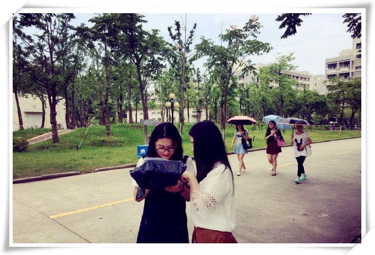

最便捷的校园快递平台—爱学派短信版app
网购让快递公司权重增加
随着消费习惯的改变，越来越多的人选择网上购物，快递行业也因此变的越来越重要，对于社区来说，无论是京东到家还是闪电购、爱鲜蜂、社区100等都能直接送到家里，十分方便，而对于校园来说，收快递是一件很麻烦的事情，由于校园的特殊性，快递公司都无法走进校园，只能通过校门口摆摊的方式派送，这对于快递公司和大学生都是一件很费时费力的事。
校园快递服务刚需明显，爱学派备受好评
对于这种普遍存在的问题，很多代收服务应蕴兴起，菜鸟驿站、小麦公社、丰巢智能快递柜、爱学派等都再做校园快递服务。记者相继走访了几个大学了解情况，其中包括复旦大学、闵行电机学院、奉贤华东理工大学，学生们表示十分喜欢爱学派的服务。据悉，爱学派的前身是一家物流电商公司，上海指端科技，凭借着在物流领域沉淀下的经验和专业服务，被很多快递公司认可，所以爱学派不仅从校园服务出发，还选择与快递公司合作，通过上下游信息的打通，实现了快递信息全程透明可查，十分安全，学生的包裹直接从物流公司送到爱学派在各校区的直营门店和加盟点，再由这里的爱学派工作人员进行专业的分拣、上架，通过他们自己的智能系统，爱学派货源版app和手持终端的配合，效率很高，几百条信息几秒钟就可以到达收件学生手机中，采访中还了解到，学生觉得爱学派最特别的地方就是工作人员的服务，学生也一直把这些工作人员亲切的称为小派，笔者走访了华东理工大学奉贤校区爱学派直营门店，发现这里的工作人员的服务和肯德基、麦当劳这些老牌服务企业一样，非常亲和，服务标准统一、专业，拣货过程3秒左右，非常高效，有时还会为收快递的学生派发一些小礼品，深得大学生的喜爱。
校园生态环境得到保障
像爱学派这样的校园快递服务平台很多，但很多学生反馈，爱学派门店里不仅能在收包裹时享受到亲切的服务，还可以在店里直接拆包裹，废弃的包裹袋，爱学派工作人员会主动帮忙处理，避免了乱扔、乱放，这对于校园环境来讲是很重要的环节,同时这一个小小的动作，也会日积月累的养成大学生爱护环境的习惯，从这里记者也看出了爱学派在校园生态上的用心之处，记者也特意询问了门店人员，为什么要增加这一个拆包裹、帮忙收包裹袋的动作呢？爱学派表示，我们不仅希望做好校园快递服务，让大学生感受到收快递是一件喜悦的事，我们更想通过自己一小步的努力，来为校园环境、校园生态、校园安全做一些贡献，虽然传统观念里企业更看重盈利，而我们爱学派更看重自己为校园、为社会做了什么。
像这样的校园快递服务是必不可少的，不仅校园的快递得到整合，学生的问题、快递公司的难处都能得到有效解决，校园的生态也会变得更加整洁、安全。